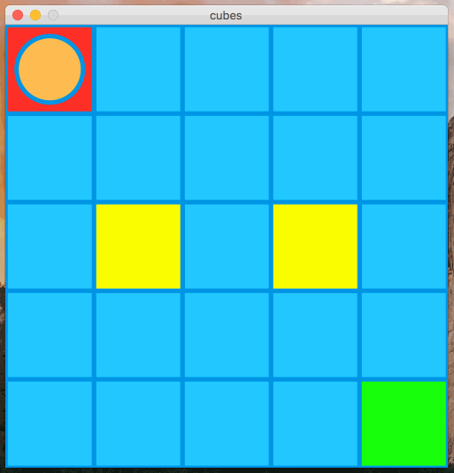
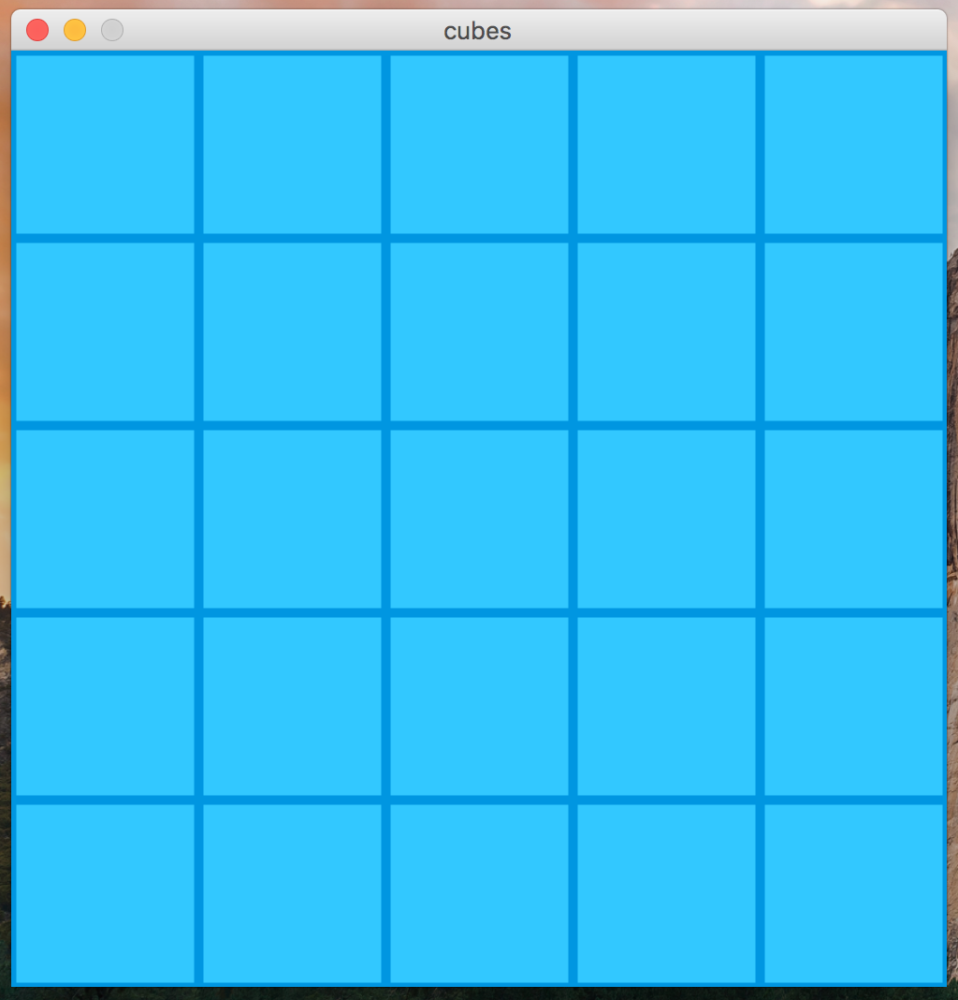
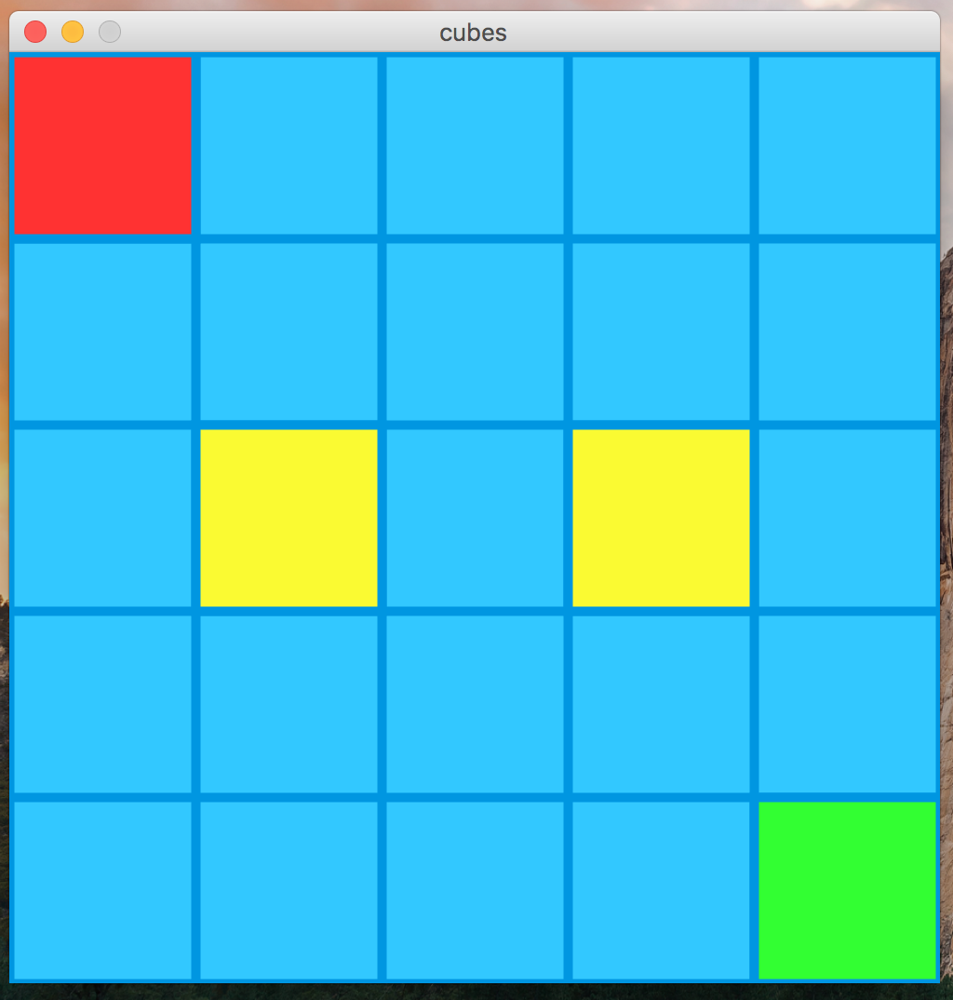
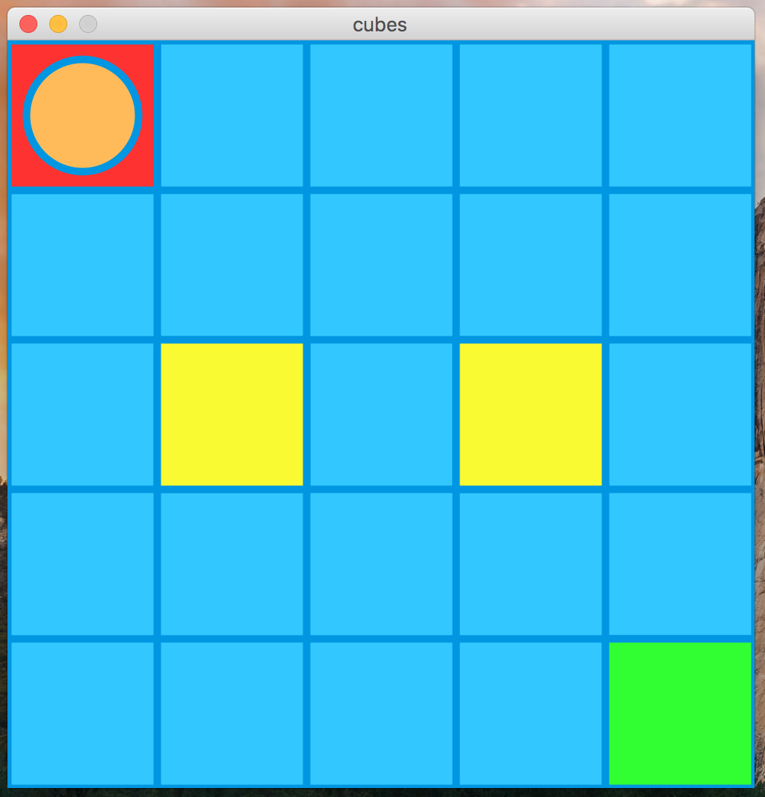
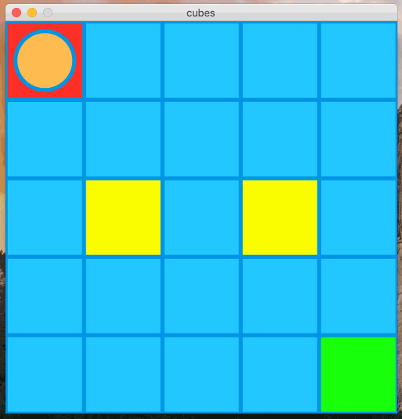

In this assignment, you will write a simple “game” that allows a user to move a character (a circle) around the screen. An example of the game being played is shown below:

Note several things about this game:
The red, yellow, and green tiles should have the colors shown. You may choose any color you want for the player, borders, and background.
Also, you must:
keyPressed function to detect key presses.Below is a suggestion of how to go about implementing this program. You are not required to follow it though. First, use for-loops to get the basic grid displaying.

Next, draw the red, yellow, and green tiles. You don’t have to worry about enforcing the rules with the yellow or green tiles yet, just get them drawn.

Next, draw the player so that it begins on the top-left tile.

Next, get the player movement working, and make sure that you can properly detect that the player has won. You’ll need to use if-statements for both of these tasks. Don’t yet worry about blocking the yellow tiles or the borders.

Lastly, add some extra if-statements (or change ones you already wrote) so that the player stays on the canvas, and cannot go over a yellow tile.
All of your programming should be well-formatted and easy for the graders to read and comprehend. You should follow the style guidelines that we have discussed in class. Each program file should have a header comment at the top that has roughly the following format:
//
// Author: Student Name
// Description:
// A short description of what this program does!
//
It is due on 3/16/2018 at 5:00pm.
Name the file cubes.pde.
Turn in each of the files described in the spec (1 total) the assignment dropbox in D2L before the due date.
Make sure to name the files exactly as this document specifies.
In general, make sure to follow these instructions precisely.